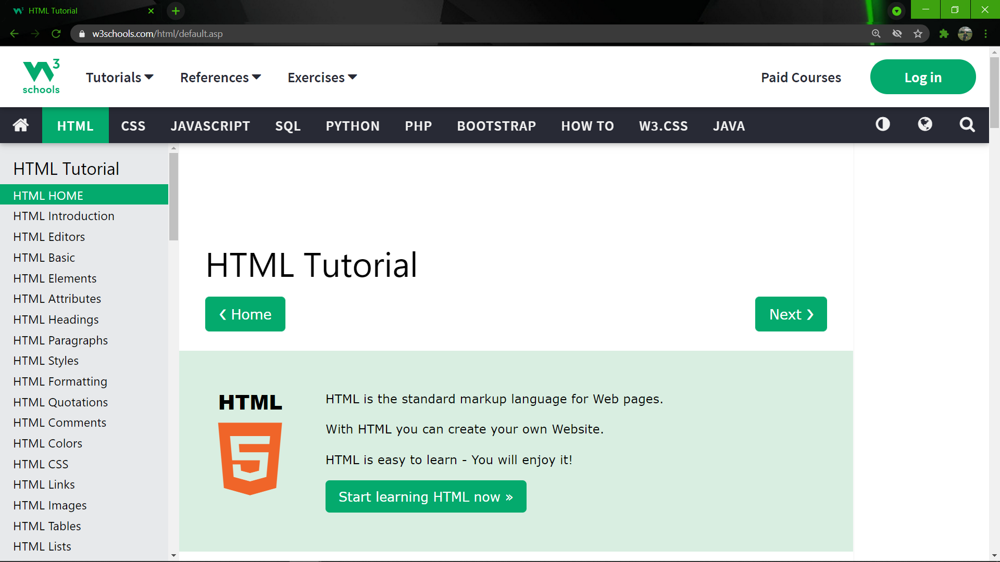
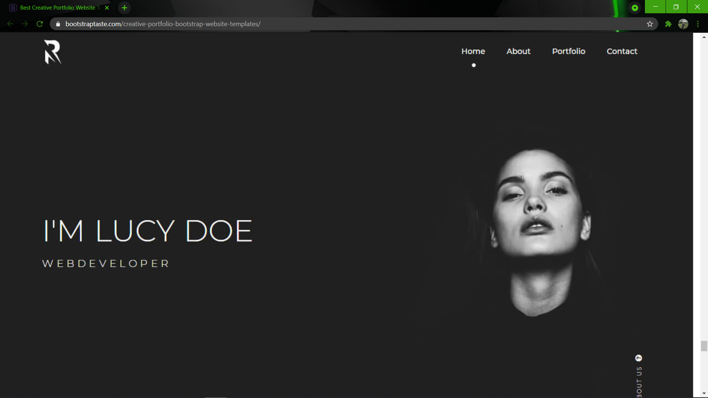
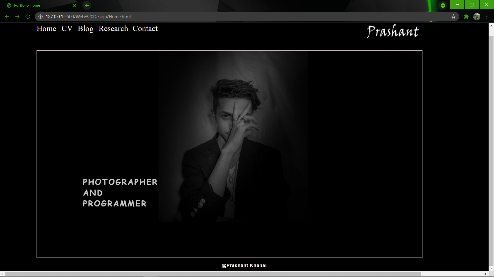
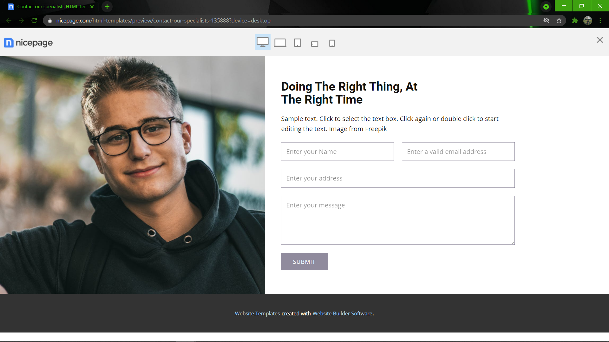
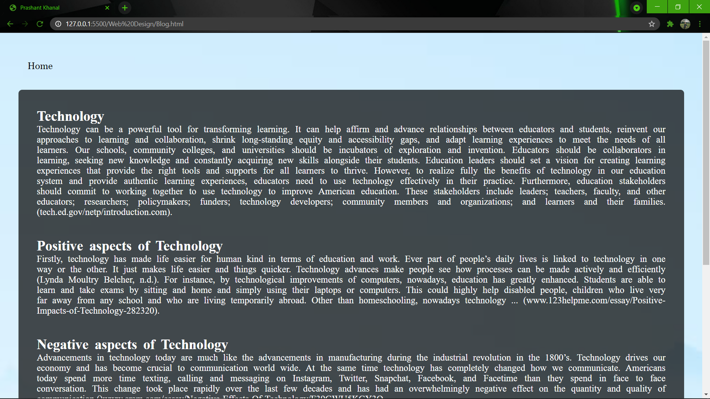
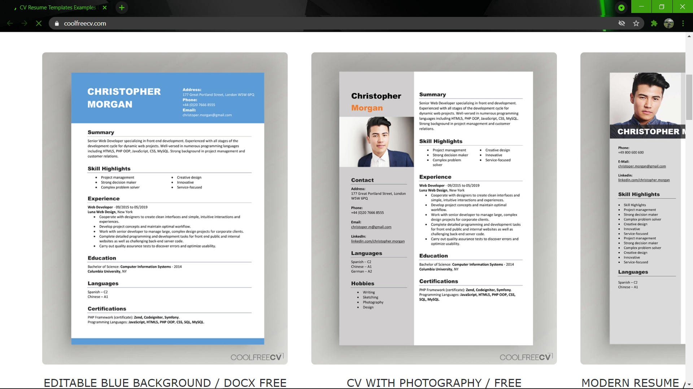

The references i have taken form these belows websites.
1. From this website below I took reference for css tags and html tags.

2. From this website below I took reference for layout

And then i have create like this

3. For the contact part I took help from the same website. In the website, the contact part is on footer part but i place it on body part of the contact page.

And then i have create like this

4. For the blog, I have took the idea of layout from this.
For the blog, I have created the article related to the topic.

5. I have written CV of myself and took refrences from this page:

Then i have create my CV like this.